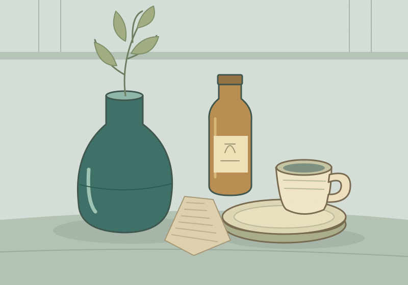
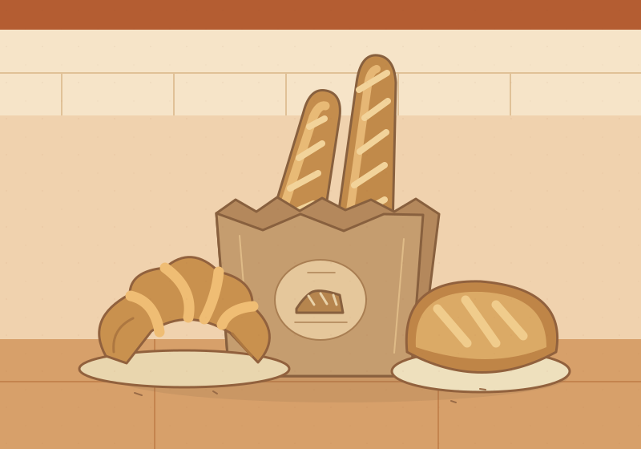
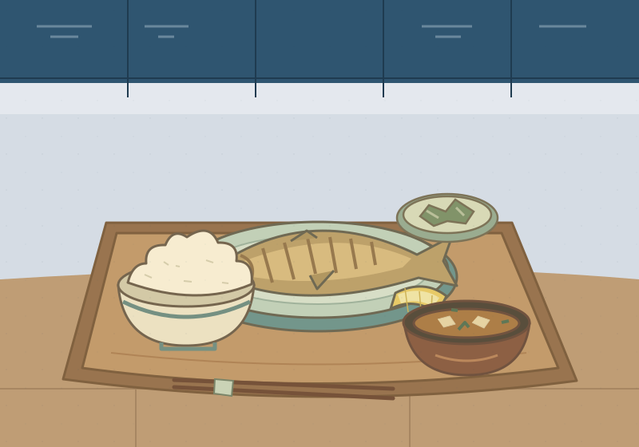
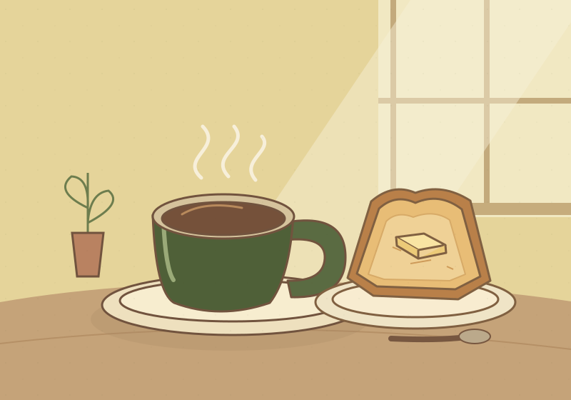
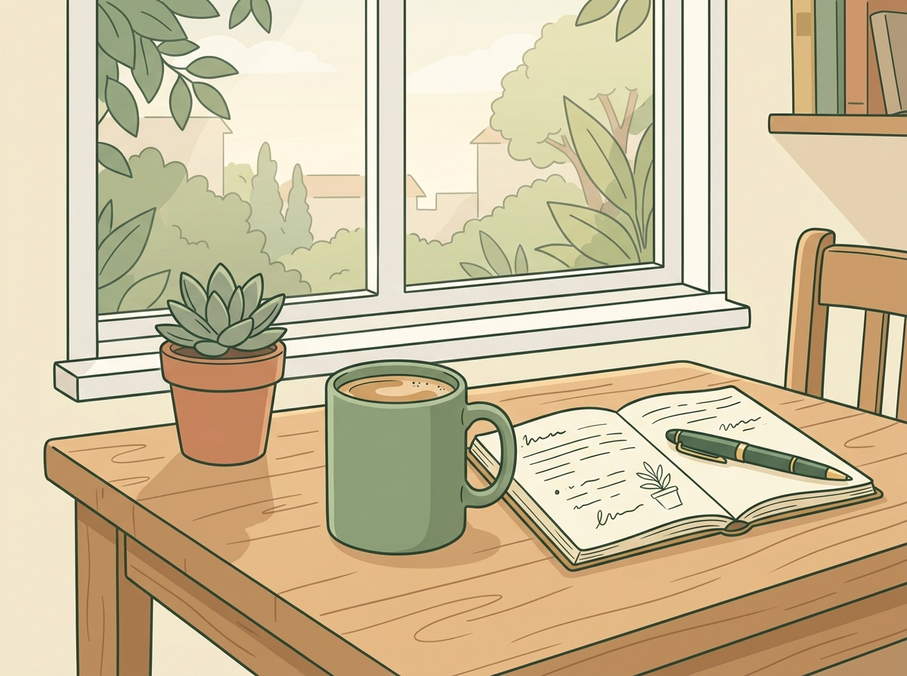

くらしの雑貨 つむぎ
いつもの暮らしに、小さなお気に入り。
使うほどに手になじむ器、やわらかな布もの、机の上が少し楽しくなる文房具。つむぎは、毎日の暮らしで長く使える道具を集めた雑貨店です。棚のあちこちに、小さな工房から届いた品が並びます。自分へのおみやげにも、大切な人への贈りものにも。迷ったときは、店主と一緒にゆっくり選びましょう。
お店について海のそば、暮らしのそば。
潮風にのって、パンの香り。
角を曲がれば、いつもの笑顔。
ひだまり商店街で、あなたのお気に入りを。
このまちで暮らす人と、商う人が、ずっとつながっていけるように。
いつものお店、新しい出会い。今日も商店街でお待ちしています。
 いい日、いい街、ひだまり。
いい日、いい街、ひだまり。
おいしいもの。手になじむもの。誰かにすすめたくなる一冊。
小さなお店がつなぐ、海辺のまちの日常です。
MEET OUR NEIGHBORS
気になるお店から、のぞいてみませんか。
7店舗中 7店舗

いつもの暮らしに、小さなお気に入り。
使うほどに手になじむ器、やわらかな布もの、机の上が少し楽しくなる文房具。つむぎは、毎日の暮らしで長く使える道具を集めた雑貨店です。棚のあちこちに、小さな工房から届いた品が並びます。自分へのおみやげにも、大切な人への贈りものにも。迷ったときは、店主と一緒にゆっくり選びましょう。
お店について
朝の商店街に、焼きたてのしあわせ。
早起きした朝に寄りたくなる、家族で営むまちのパン屋です。毎朝少しずつ焼くパンは、毎日食べても飽きない素朴な味。看板の塩バターロールは、底のかりっとした食感が自慢です。お昼には季節の野菜を挟んだサンドイッチも並びます。紙袋を抱えて、海辺のベンチまでお散歩しませんか。
お店について
海が見える坂道、いつもの定食。
毎朝市場から仕入れる新鮮な魚と、あつあつのご飯。港食堂は、お腹をすかせた人が集まるまちの定食屋です。人気のアジフライは、衣はサクサク、身はふっくら。小鉢のお惣菜も毎日変わります。仕事の合間にも、海へ遊びに行った帰りにも。しっかり食べて、元気になって帰ってください。
お店について一輪からはじまる、いい一日。
店先に季節の花と緑があふれる、商店街の小さな花屋です。特別な日の花束はもちろん、食卓に飾る一輪も気軽にどうぞ。花の名前やお手入れのことは、その場でお伝えします。ご予算や贈る相手の雰囲気に合わせた花束も承ります。お買いもの帰りに、今日の気分に似た色を探してみてください。
お店について
いつもの一杯と、何もしない時間。
商店街の角で、ゆっくりとコーヒーを淹れる小さな喫茶店です。朝の光が差す窓辺には、使い込まれた木の椅子と、少しだけ背の低いテーブル。深煎りのブレンドと昔ながらの固めのプリンをおともに、散歩の途中でひと息ついていってください。おひとりでも、本を片手でも、どうぞ。
お店についてまだ知らない一冊と、待ち合わせ。
旅のエッセイ、暮らしの本、絵本に小さな出版社の読み物。店主が一冊ずつ選んだ本が、古い木の棚に並ぶ書店です。海の見えるまちで読みたい本を集めた「波まちの棚」には、手書きのおすすめも添えています。探している本が決まっていなくても大丈夫。ページをめくりながら、気になる一冊を見つけてください。
お店について
日々のパフォーマンスを引き出す、計算された一杯を。
独自の焙煎プロファイルデータを解析し、豆のポテンシャルを最大限に引き出す1度単位の温度管理と時間制御を実施。集中したい朝や、リラックスしたい夜など、その日のコンディション（体調）に合わせた最適なコーヒー豆を提案します。
お店について別の言葉でさがすか、カテゴリを変えてみてください。
STREET JOURNAL
商店街の、ちいさなできごと。
詳細は9月下旬にお知らせします。
10月11日（日）10:00〜15:00、商店街の小さな広場に焼き菓子や古本、季節の花が集まります。お散歩がてら、お立ち寄りください。
お買い物の合間に、海を眺めてひと息。商店街の入口に木のベンチを置きました。お持ち帰りのコーヒーのおともにもどうぞ。
商店街のお店や、日々のできごとをお届けします。次のお休みに行ってみたいお店を、見つけていただけたらうれしいです。